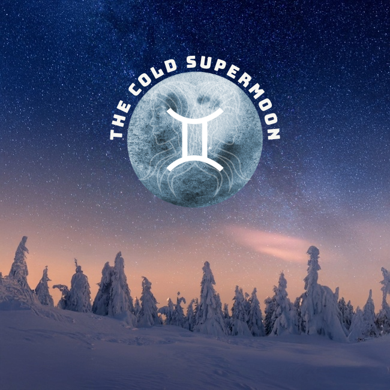
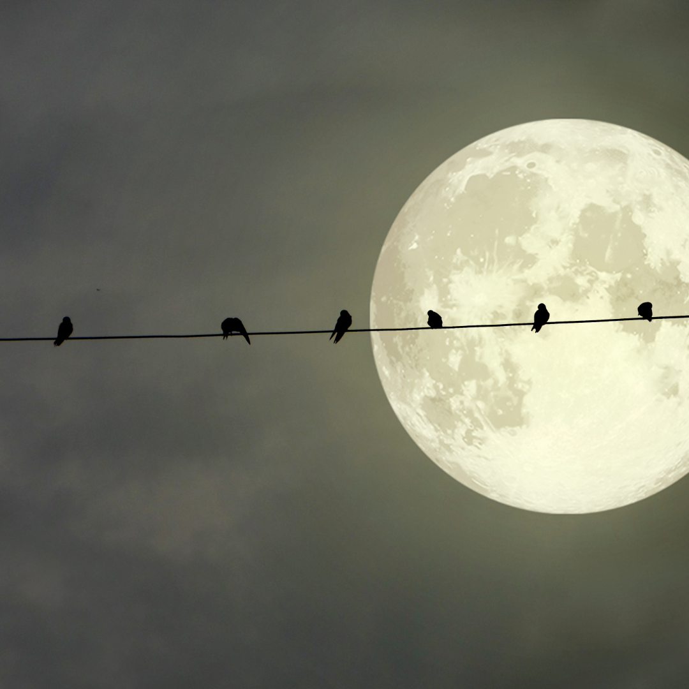
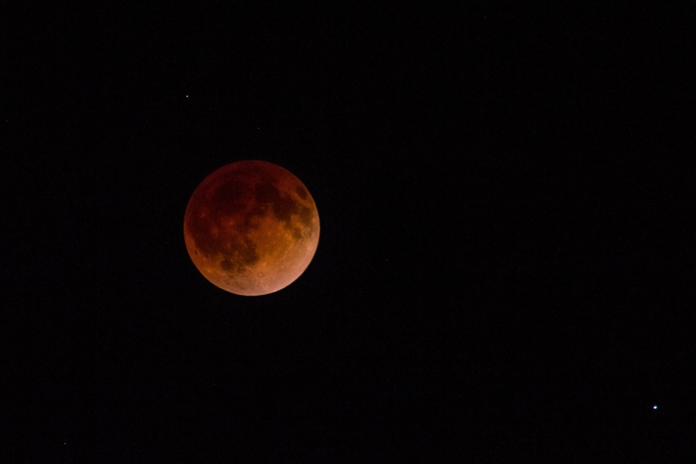
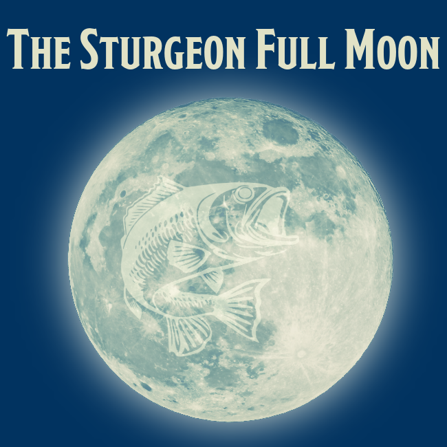
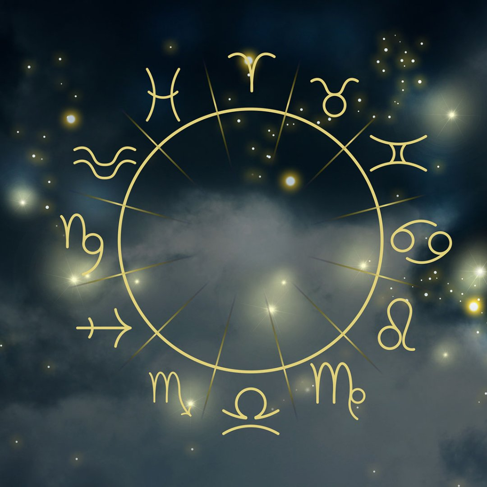
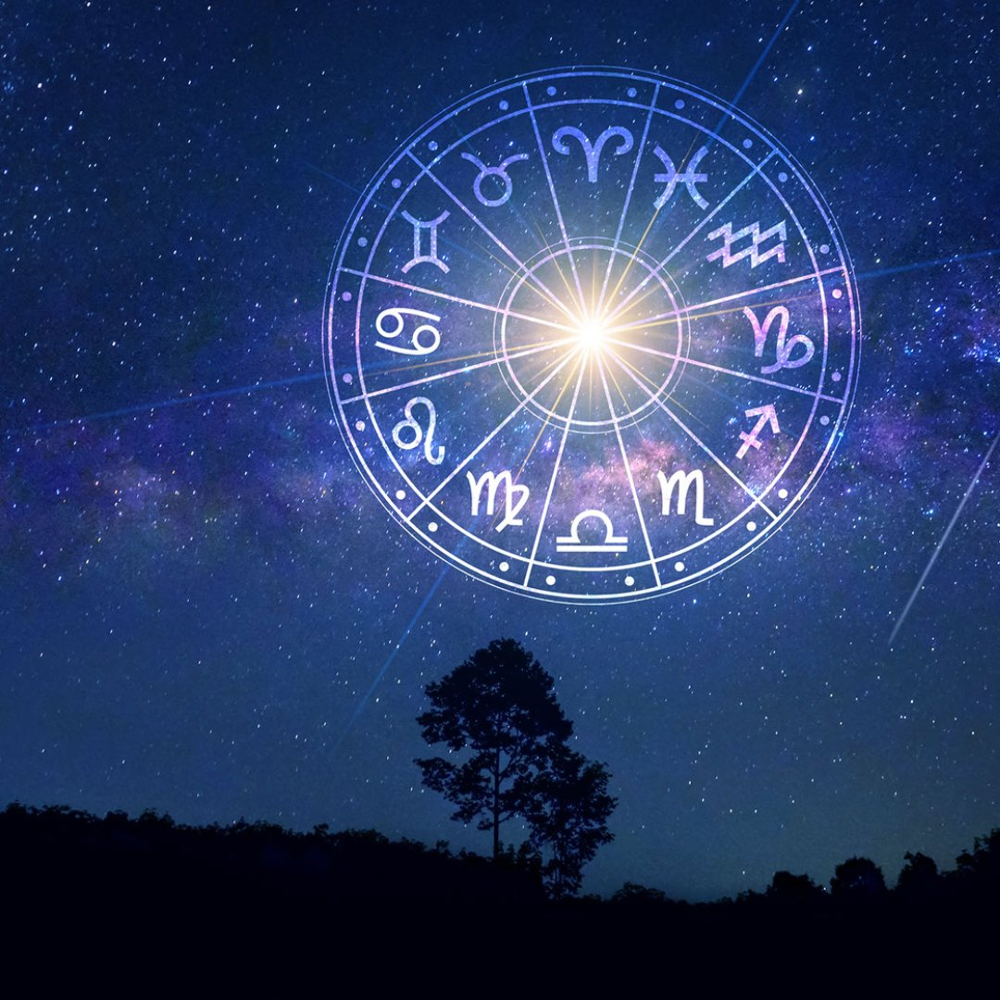

Astrology & Guest PostsGuest Column: The Gemini Full Moon, A Chatty Kathy
The final supermoon of 2025 is brightening the sky this Thursday, Dec. 4, at 6:14 p.m.
Read BlogBlog topic
Browse the latest Healer Next Door blogs in this topic.
Browse
Blog

Astrology & Guest PostsThe final supermoon of 2025 is brightening the sky this Thursday, Dec. 4, at 6:14 p.m.
Read BlogWe’ve got another supermoon on our hands.
Read Blog
Astrology & Guest PostsBe careful not to butt heads with your loved ones when the full Harvest Supermoon takes to the skies on October 6, peaking at 11:48 PM EDT.
Read Blog
Astrology & Guest PostsIt’s eclipse season!
Read Blog
Astrology & Guest PostsI love a good full moon.
Read BlogThe full moon — brightening the night sky on Thursday, July 10 — has a mission for us, should we choose to accept it.
Read BlogJupiter, the planet of luck and expansion, made its way into the sign of Cancer.
Read BlogAs the days grow longer and the sun reaches its zenith in the sky, we approach the magical time of the Summer Solstice.
Read BlogAstrology is a type of divination based on the idea that information about the future or about a person's personality can be discovered through examining the alignment of stars, planets, moons, and comets.
Read BlogEmpedocles, a Greek philosopher, scientist, and healer who lived in Sicily in the fifth century B.C., believed that all matter comprises the four elements: earth, air, fire, and water.
Read Blog
Astrology & Guest PostsThe 12 Signs of the Zodiac are separated into four elements: Fire, Earth, Air, and Water.
Read Blog
Astrology & Guest PostsAstrology is a complex art and science which applies symbolic meaning to astronomical information as it existed over two thousand years ago when the practice of astrology was first documented in writing by ancient astronomers and astrologers.
Read BlogServices
Learn about Reiki, Akashic Records, meditation, Work Trauma Coaching, and Corporate Wellness.
View Services